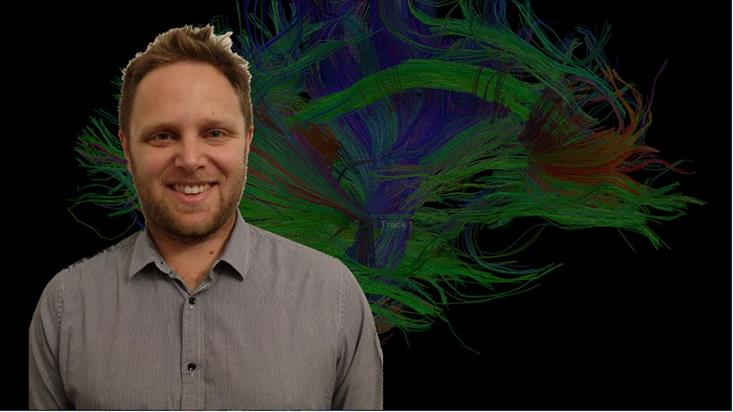

Dr. Brenton Hordacre
by Helena Huang, 10 Sep 2019

Dr Brenton Hordacre is an NHMRC early-career research fellow in the Body in Mind Group at the University of South Australia. Brenton is the co-chair of the Australasian Neuroscience Society EMCR committee and serves on the SA branch of the Australian Postgraduate Award Council. He is well-recognised for his contribution to the field; his research career is punctuated by many awards, including most recently the prestigious Elizabeth Penfold Simpson Prize for best research article published in 2018 from the Brain Foundation. I tracked Brenton down for a chat to learn more about what he does and why.
Brenton completed his PhD at Flinders University in 2014. He continued his training as a postdoctoral researcher at the University of Adelaide from 2014 to 2017, before taking up his current position with the Body in Mind group at the University of South Australia. As a trained physiotherapist, Brenton’s research uniquely combines physiotherapy and neuroscience, with a focus on understanding the brain’s recovery mechanisms following a neurological injury such as a stroke.
Brenton has expertise in research techniques that probe the activity of the human brain in vivo including magnetic resonance imaging (MRI) and electroencephalography (EEG). He specialises in non-invasive methods for brain stimulation such as transcranial direct current stimulation (tDCS) and transcranial magnetic stimulation (TMS). His research identifies connectivity patterns in the brain which can be understood as a kind of useful ‘biomarkers’. Preliminary results have shown that these ‘biomarkers’ can often predict how well the participant will respond to a certain treatment. Naturally, this information could be valuable in a clinical setting as it may be used to guide the selection of treatments for stroke suffers to optimise recovery.
Excitingly, a major study of Brenton’s is due to wrap up at the end of the year. Launched in 2018, this study attracted much media attention at its debut as it featured the country’s first in-home brain stimulation rehabilitation program for people who have suffered a stroke. Participants attend the clinic at the onset of the study in order for baseline data to be collected, and are then given instructions for a physical rehabilitation exercise and a user-friendly brain stimulation kit to take home. In the comfort of their own homes, participants practise the physical exercise and perform brain stimulation on themselves as part of their rehabilitation program, the latter supported by Skype sessions with Brenton to ensure the electrodes are correctly attached to the head. This study is the first of its kind and pioneers an in-home rehabilitation program that is more accessible and convenient for the patients. Unsurprisingly, it has generated much interest and currently counts over 60 participants in its cohort. The data collection phase is near completion and Brenton tells me that he is himself blind to the test and the control groups of participants. It is too early to tell whether the treatment was effective, but I think it’s safe to say that more than a few people are eagerly watching this space.
Lastly, I asked Brenton how he manages to strike the elusive work–life balance as an up and coming EMCR. Brenton says that coming from a background as a physiotherapist, he has always enjoyed working with people and values the contact time with patients; being able to maintain the link between physiotherapy and his research endeavours has made the whole thing a little easier. In fact, Brenton continues to practice as a senior physiotherapist at the Repatriation General Hospital in Adelaide and holds a position on the SA branch of the Australian Physiotherapy Association Council. On top of it all, Brenton is the proud and perhaps somewhat fatigued father of three little cherubs—this means when he is not chasing after his dreams of translating research findings into better clinical practice, he is chasing after the little ones. Good luck catching both, Brenton!